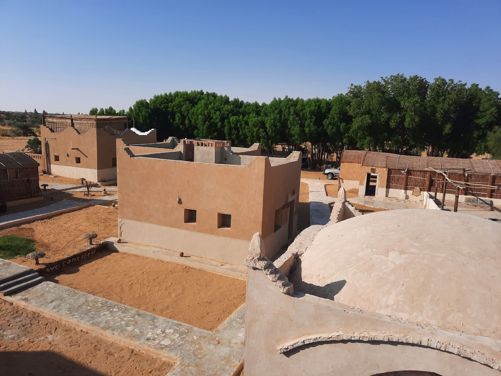
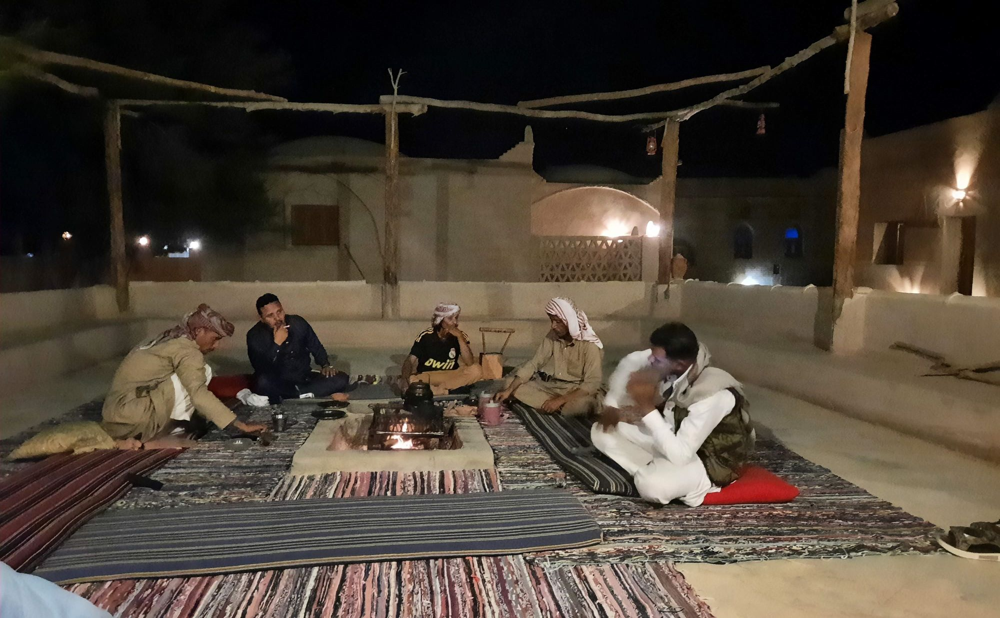

06:10 · أول الضوء
الشروق على الكثبان
اصعد أقرب قمة في صمت بينما يتحول لون الرمل من الرمادي إلى الذهبي.
٤٠ دقيقةتلّة المخيم

واحات نائية وطرق قوافل قديمة وكثبان بحر الرمال الأعظم، نعبرها بالدفع الرباعي أو على الجمال أو سيرًا على الأقدام، مع فريق محلي ذي خبرة ومخيمنا الخاص في واحة أبو منقار.
يتم الحجز بالتواصل مع فريقنا: نُعدّ كل رحلة خصيصًا لك.
بنينا Sand Gate Camp
 بأيدينا، من الطين والنخيل، على حافة الواحة: خانٌ للمسافرين بين الفرافرة والداخلة
بأيدينا، من الطين والنخيل، على حافة الواحة: خانٌ للمسافرين بين الفرافرة والداخلة
 وبوابة إلى بحر الرمال الأعظم.
وبوابة إلى بحر الرمال الأعظم.
في الطريق، الضوء هو من يحدد الإيقاع. ننطلق قبل الحر، ونستريح في الظل وقت الظهيرة، وننصب المخيم في الوقت المناسب لمشاهدة الشمس تغيب خلف الكثبان.
اصعد أقرب قمة في صمت بينما يتحول لون الرمل من الرمادي إلى الذهبي.

خبز على النار وتمر وجبن وشاي ثقيل قبل تحميل السيارات.
مراحل بالدفع الرباعي عبر حقول الكثبان والهضاب والطباشير الأبيض، مع التوقف حيثما تدعونا الأرض.

غداء يُعدّه الطاقم في ظل صخرة أو شجرة سنط. تهدأ الصحراء، ونهدأ نحن أيضًا.

حمّام في عين حارة، أو نزهة في بستان نخيل، أو أسوار قلعة رومانية.

تُنصب الخيام وتُشعل النار، وتمتلئ السماء بنجوم أكثر مما رآه معظمنا في حياته.
رحلتا عبور مميزتان من القاهرة، ومسارات مصممة لك: من يوم واحد في الصحراء البيضاء إلى أسابيع بين الواحات.
شاهد كل الرحلات
الصحراء البيضاء وبحر الرمال الأعظم وقلاع الخارجة ومقابرها الرومانية.

كهف الجارة وكثبان أبو محرّق وحيتان وادي الحيتان المتحجرة.

مسارات خاصة وجماعية بالدفع الرباعي أو بقافلة جمال أو سيرًا، حسب تواريخك.

تغطي الصحراء الليبية ثلثي مساحة مصر، من البحر المتوسط إلى الجلف الكبير. سُكنت واحاتها الخمس الكبرى منذ ما قبل الفراعنة، وكانت كل واحدة منها محطة على طرق القوافل نحو أفريقيا.
يمكن قطع كل مسار بالدفع الرباعي، أو بإيقاع قافلة الجمال، أو سيرًا على الأقدام، وتجمع معظم الرحلات بينها. يحدد مرشدونا وسائقونا البدو الطريق، ونحرص نحن على أن يسير كل شيء حوله على ما يرام.
قيادة خارج الطرق عبر بحر الرمال الأعظم وبين منحوتات الطباشير في الصحراء البيضاء، انطلاقًا من البحرية.
بإيقاع طرق القوافل القديمة: تسير بجانب الجمال وتنام حيث كانت القوافل تتوقف.

مسارات مشي إلى الأخاديد والفن الصخري وأطلال قلاع العصر الروماني، بإيقاع يترك وقتًا للتأمل.

في رحلة القاهرة – الخارجة يتغير المشهد كل يوم: طباشير أبيض، ثم بحر رمال، ثم واحة نخيل، ثم الحدود الرومانية. أربع لحظات على الطريق.

الجبل الكريستالي، ثم ممر العقبات إلى التكوينات الطباشيرية.

الشروق في العقبات، وشاي في بئر خضرة، وتخييم حيث تبدأ الكثبان.

يوم راحة في Sand Gate Camp: الواحة وبئر محمود وحمّام في عين حارة.
قلعة رومانية ومقابرها والقنوات التي نقلت المياه تحت الأرض.

يقوم Sand Gate Camp على أرض مساحتها ٥٠٠٠ م² بين نحو ٨٠ هكتارًا من النخيل والأشجار المثمرة في أبو منقار. بُني منذ ٢٠٠٩ بتقنيات البناء بالطين التقليدية، وهو قاعدتنا بين الواحات والكثبان.

يُختار كل موقع تخييم لحمايته من الرياح وأفقه الصافي ومكان جيد لمشاهدة الغروب.

يطهو الطاقم على الجمر. يُصب الشاي وتُروى الحكايات، ولا أحد ينظر إلى هاتفه.
بعيدًا عن أي مدينة، تشرق درب التبانة فوق الكثبان. خطط بعيدًا عن البدر إن أردت النجوم، أو معه إن أردت أن تتوهج الكثبان.
نعرف هذه الدروب لأننا نعيش عليها.
مرشدونا وسائقونا بدو ، أهل هذه الصحراء الذين عبروها دائمًا.
كل سيارة مزودة بـ GPS وهاتف بالأقمار الصناعية. السلامة ليست إضافة.
من يوم واحد إلى عدة أسابيع، يُصمَّم المسار حولك أنت، لا من كتالوج.
رحلات غير مألوفة: قلاع رومانية، منسية ومعابد، وطرق قوافل.
ننظم رحلات صحراوية لوكالات السفر والمنظمين المتخصصين في المغامرة والمشي والتصوير والسياحة الطبيعية. برامج ثابتة أو مسارات مصممة لعملائكم.
لا يوجد حجز آلي: نُعدّ كل رحلة خصيصًا لك. أخبرنا بالتواريخ وعدد المسافرين وطريقتك المفضلة في السفر، وسنرد عليك شخصيًا بالمواعيد المتاحة وعرض السعر.
مكتب الحجوزات من 08:00 إلى 20:00 بتوقيت مصر. تفضّل استمارة؟ انتقل إلى صفحة الاتصال